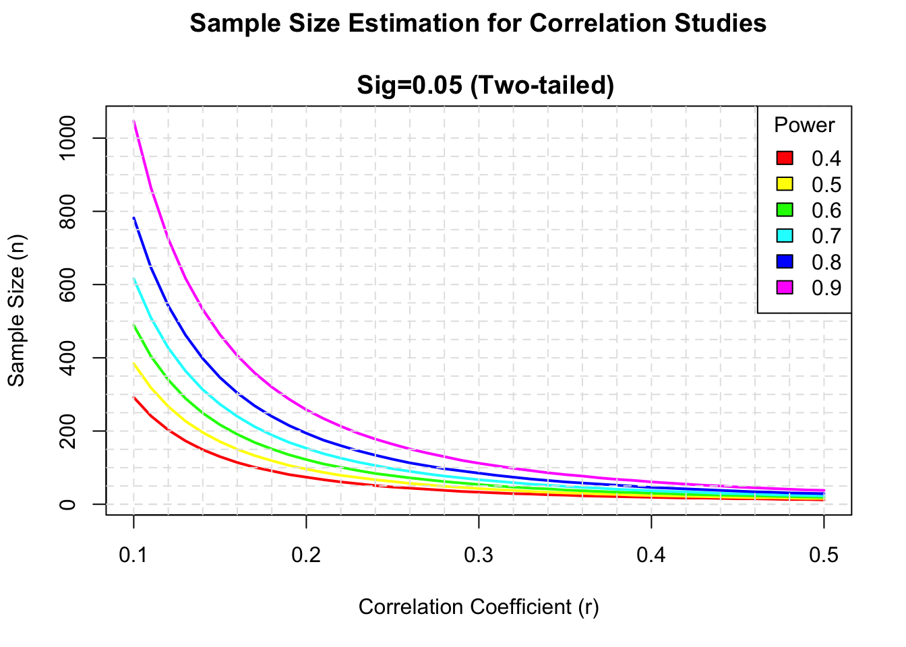

EDLD 710: Data Analysis for Problems of Practice
1 Purpose of this Document
The purpose of this document is to assemble some advice and resources to support Swedish Pharmacy residents in their journey from project proposal to a completed research project for presentation and publication.
2 Planning the Project
2.1 The causal logic of the project
The resident researcher should begin the project with a basic sense of the design logic of the project. The point of this section is to introduce or reinforce a few basic concepts of research design as they apply to the resident research project.
The project aspires to make a case for a proposed improved medical treatment. This case rests on causal evidence that the proposed treatment is more clinically effective than the current mode of treatment. The most convincing case would demonstrate that the treatment alone caused the improvement and cast doubt that the improvement would have happened anyway. To thoughtfully plan data collection for the strongest causal evidence, and to anticipate and minimize challenges of rival explanations, is the purpose of research design (CampbellStanley1963?).
The ideal design would be based on random assignment of patients to conditions, as in a randomly controlled trial. The resident researcher would randomly assign patients to a control condition and various treatment conditions, then compare outcomes of all these groups following treatment, and the outcomes will differ at least slightly. Assume patients in the treatment conditions had better outcomes than patients in the control condition. The resident could attribute this difference to the treatment alone because in all other ways the groups would differ only by chance by design.
Random assignment is probably not an option for resident research project. Until that happens, the project falls under the category of quasi-experiment which means it is more vulnerable to confounding explanations of any differences in outcomes.
The resident research project based on retrospective chart review will culminate in a comparison between two groups: a pre-implementation group and a post-implementation group. Assume a set of data that show better outcomes for the post-implementation group. Great! Can we attribute that to implementation of an improved treatment or protocol, or for some other reason would the post-implementation group have fared better anyway?
One potentially confounding pre-existing difference between the two groups is time, or history. A recent resident project provides a good example. In this project, the time frame for the pre-implementation group was early 2020 and thus this group had a higher incidence of COVID-19 infection than the more recent post-implementation group. Were outcomes for the pre-implementation group less favorable because more of them were infected with COVID-19? The proposed dosing protocol may very well have improved outcomes for the post-implementation group. The problem is there are competing explanations of the results. Pre-existing differences between the two groups in COVID-19 infection amounted to a confounding variable due to history.
The point here is not to teach a course in research design but to help the resident researcher clarify for this project:
- What are the primary outcomes to improve? Length of stay? Time-to-therapeutic level? These are dependent variables. They depend on, or are the effects of, other variables.
- What is the difference in treatment intended to cause the improvement in the post-implementation group? This is the independent variable.
- All other variables are control variables. They should differ only by chance. If there is a noticeable pre-existing difference, and the level of that factor in one group affects the outcome, it is a confound.
2.2 How many patients?
Possibly the most pressing question for resident research projects is: How many patients do I need?
The resident research project will culiminate in a series of comparisons between the pre-implementation and post-implementation groups. Outcomes of the two samples will differ by at least some quantity. The resident researcher expresses this difference as an effect, like this:
[insert table about here]
Assume that this effect suggests more favorable outcomes for the post-implementation group. This effect raises several questions:
- How do we evaluate this effect?
- Could we attribute it to chance? (because it would be very unlikely for both groups to have exactly the same outcomes)
- Or is it larger than that?
In statistical terms, this is a question of statistical power. Power is the ability to isolate a treatment effect when it really does exist (Cohen1988?). Power is a function of effect size, sample size, and statistical significance. In order to decide on a number of patients we need to have a sense of what size of effect we want to reliably detect.
This a plot of power rates against these other variables. A large effect (r ~ 0.5) is detectable with a sample of any size. But only large samples have the power to detect a statistically significant (p < .05) small correlation (r = 0.1).
3 Collecting your Data
3.1 Data Sources
For collecting data from Epic, it might be helpful to have a sense of the landscape of its different databases. There are three primary databases:

Chronicles. This is the database that is collecting data from Hyperspace in real time. For reporting, Reporting Workbench pulls data directly from Chronicles, but it is otherwise not designed very well for historical reporting.
Clarity. This is the primary relational database for reporting Epic data. Through a nightly process known as ETL (“extract-transform-load”), Clarity extracts data from Chronicles and stores it in a thousand bazillion tables (think “spreadsheets”). To pull data for a report from Clarity is to identify the correct tables and fields and to write a SQL query to join the tables, apply the appropriate selection criteria, and report the appropriate fields.
Caboodle. This a relatively new relational database that functions essentially the same as Clarity but is designed to be much easier to use. Caboodle uses fewer tables derived from myriad Clarity tables which vastly simplifies the work and complexity of writing a SQL query. The down side is not all Clarity data are in Caboodle.
3.2 Granularity of data
Granularity means two related things. One is the size of the data point which is to say what context it provides for other, smaller, data points. The other is, essentially this question: What does a row in the spreadsheet mean? There are several different levels of granularity:
Patient-level data. A patient has a unique ID number: the MRN. No two patients have the same MRN. When it comes to mining Epic data for the research project, the patient list is perhaps the most important: the resident needs a “patient list”. When it comes to data mining, the patient “level” is context to more granular data in the sense that a patient can have multiple encounters - and thus multiple Encounter CSNs “within” the same Patient MRN.
Encounter-level data. The unique Epic ID number for the encounter is the CSN. The encounter is context to more granular data such as a treatment regimen of a particular medicine. Multiple drug administrations can occur “within” an encounter CSN.
Medication administration level data. This is possibly the lowest level and the most granular data. In Caboodle, each administration of a medicine has a unique ID number and is time-stamped. My queries to date have been for counts of medicine administrations, or firsts, lasts, minimums and maximum doses within a hospital encounter or ICU stay.
Lab results level data. Lab data is similar to medicine administration data because, again in Caboodle, each lab result is has its own unique ID number and is time-stamped. There can be a great many lab results within a hospital encounter. My queries to date have been for counts of lab results, or firsts, lasts, minimums and maximum values within a hospital encounter or ICU stay.
The resident data collection form is designed for patient level data; each row in the spreadsheet captures the experience of a hospital encounter. It can also be helpful to report the medicine administration and lab result data sorted chronologically by patient and encounter.
3.3 Advice for Data Collection and Management
Be proactive. As you begin to decide what data to collect, submit your project plan and requests for data in writing to me (Jack) as soon as possible. This is so I can have a bit of time to understand your project, do some discovery in Caboodle or Clarity, and note any questions. Then meet with me via Teams to get on the same page.
Devise a system for organizing your data. By this I mean version control. This data collection process is iterative. You will ask for data and I’ll write a SQL query that produces an Excel workbook of data. That’s one iteration. In all likelihood you’ll need a revision or two. Upon receiving your feedback I’ll edit my query and produce for you a new set of data to replace the first set. That’s the second iteration. The more iterations, the more data, the more potential for multiple versions and data overload. And I may not be able to do more than a few iterations. I can work on some best practices to help us through this. Stay tuned.
There is no substitute for chart review. Some fraction of resident research data can come from Epic data mining, but it still needs to be validated with careful chart review. And some data which are very difficult to mine or to query into the correct format may have to come from chart review.
4 Analyzing your Data
You have data. Congratulations! Let’s analyze!
4.1 Preparing your data for analysis
The first step is to complete a number of tasks to prepare your data for analysis. One data matrix. See the exemplar.
4.2 Choosing appropriate statistics
It is important to know the measurement level of your variables. How do you express the outcome by which to compare your pre- and post- samples? Is it…
- Mortality rate (% surviving)? In such a case you would be comparing two proportions.
- “Time to…” a therapeutic level? In such a case you would be comparing two different quantities of time.
Odds ratios / Logistic regression. Some outcomes are binary. Yes or no. Something happened or it didn’t. Treatment worked or it did not. For projects with binary outcomes, the researcher will want to consider comparing odds ratios. Logistic regression would be the appropriate technique for modeling differences between the pre- and post-implementation groups in whether patients landed in one category or the other.
Chi-square test of independence. Some outcomes are categorical. There is no “more” or “less” but rather different categories of outcomes. For projects with categorical outcomes, the researcher will want to consider using chi-square tests of independence.
Two-sample t-test.
Z test of the difference of proportions.
Cohen’s d effect size.